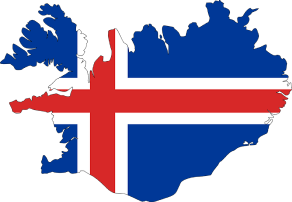
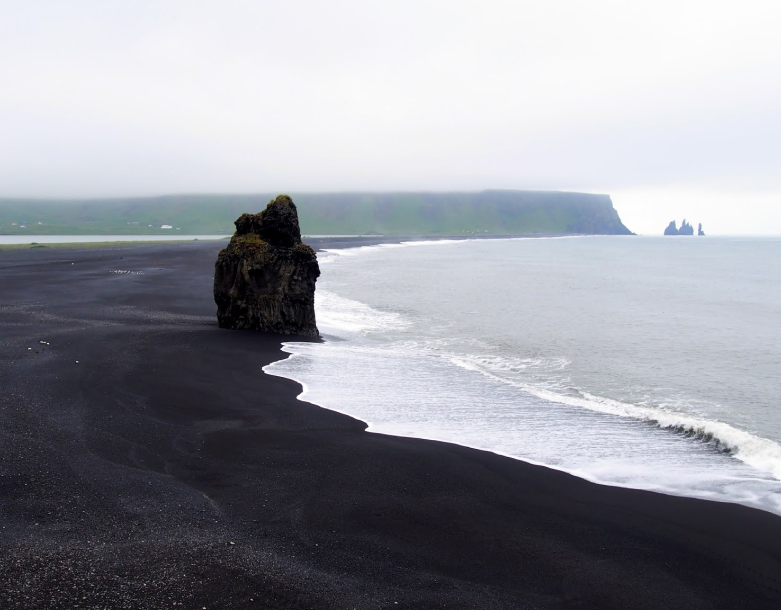

Исландия
5 причин посетить Исландию
Северное сияние
Благодаря своему географическому расположению Исландия является одним из лучших на земле мест для наблюдения за северным сиянием. Это удивительное природное явление можно наблюдать в Исландии в период с сентября до середины апреля. Северное сияние – одна из главных причин для посещения Исландии в зимний период.
В спокойную зимнюю ночь мистические зеленые огни можно наблюдать и над Рейкьявиком. Однако шансы увидеть северное сияние значительно вырастут, если вы отправитесь подальше от освещенного электричеством города. В Исландии много опытных гидов, которые специализируются на турах для наблюдения за северным сиянием.
Геотермальные ванны
В Исландии есть множество геотермальных бассейнов, окруженных величественными пейзажами.
Одно из популярных мест – геотермальное озеро Голубая лагуна, расположенное в юго-западной части Исландии, в 40 километрах от Рейкьявика. Воды озера богаты серой и диоксидом кремния и известны своими природными целебными свойствами. Температура воды в озере в любое время года в среднем составляет 38-40 градусов.
Купание в кристально-голубой воде с видом на заснеженные горы или зеленые холмы подарит вам незабываемые впечатления и благотворно скажется на вашем здоровье.
Вулканы
Исландия вулканически и геологически очень активна. В этом регионе сосредоточено большое количество действующих вулканов.
При коротком посещении Исландии вы вряд ли станете свидетелем извержения вулкана, но у вас точно будет возможность посетить один из спящих вулканов.
Самым увлекательным природным явлением такого рода является спящий вулкан Thrihnukagigur, расположенный неподалеку от Рейкьявика. Это единственный вулкан в мире, где посетители могут на лифте спуститься в магма-камеру вулкана. Экскурсия в самое сердце бездействующего вулкана запомнится вам на всю жизнь!
Национальный парк Тингведлир
Одним из обязательных для посещения мест в Исландии является национальный парк Тингведлир, расположенный в 45 минутах езды от Рейкьявика.
В парке расположено крупнейшее природное озеро Исландии Тингвадлаватн, через которое проходит Сильфра – разлом между Северо-Американской и Евразийской тектоническими плитами. Прозрачные воды Сильфры привлекают любителей подводного плавания со всего мира уникальной возможностью поплавать между континентальными плитами.
Некоторые туристические сайты включают Сильфру в топ-50 мест для дайвинга в мире.
Чёрные пляжи

Исландия не может похвастаться теплой солнечной погодой, тем не менее ее пляжи привлекают посетителей со всего мира. В первую очередь своей удивительной красотой.
Неподалеку от деревни Вик на юге Исландии расположен всемирно известный черный галечный пляж Рейнисфьяра. Это удивительное по красоте место с черными базальтовыми скалами, огромными пещерами и постоянно дующим сильным ветром.
Еще один черный пляж, который можно посетить, расположен в бухте Djúpalónssandur на полуострове Снайфедльснес. Когда-то эта бухта служила домом для шестидесяти рыболовных судов, а рядом располагалась одна из самых богатых рыбацких деревень на полуострове, но сегодня бухта необитаема.
Любишь Исландию?
Подпишись на рассылку и получай свежую информацию про эту страну!